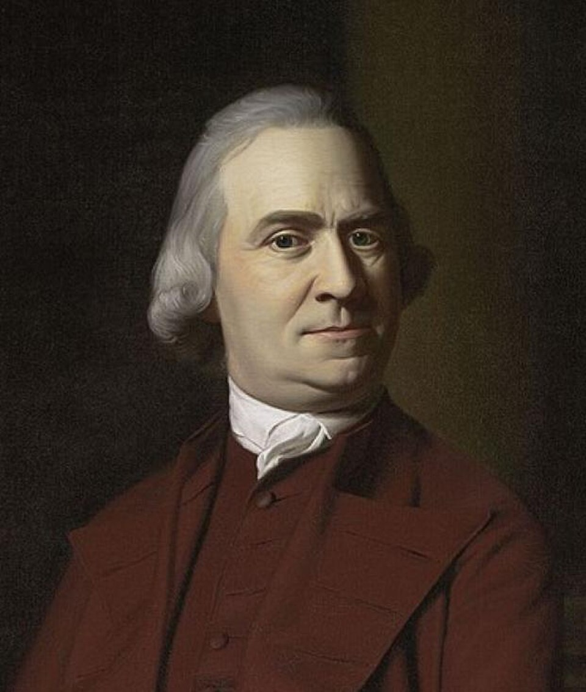

מנהיג מחאה ומהפכן פוליטי
סמואל אדמס
Samuel Adams
מן הפעילים הבולטים בבוסטון לפני המהפכה, מארגן פוליטי, מחבר כרוזים ומי שסייע להפוך מחאה מקומית לתנועה בין־מושבתית רחבה.

מקור התמונה: Wikimedia Commons · נחלת הכלל · צייר: John Singleton Copley · קובץ מקור: Samuel Adams by John Singleton Copley (cropped).jpg
פרטים בסיסיים
אטימולוגיה ופירוק השם
Samuel: מן השם העברי שמואל. פירושו המקובל במסורת הוא "האל שמע" או "שם האל". השם עבר למסורת הנוצרית דרך המקרא והפך לשם נפוץ בעולם האנגלי־פרוטסטנטי.
Adams: שם משפחה פטרונימי שמקורו בשם Adam, כלומר "בנו של אדם". השם Adam קשור למסורת המקראית של האדם הראשון ולשורש קדום הקשור באדמה ובאנושות.
ילדות, משפחה והשכלה
אדמס נולד בבוסטון למשפחה פוריטנית מבוססת ובעלת מעמד בקהילה. אביו היה איש עסקים ודמות פעילה בחיים הציבוריים המקומיים, וסביבתו הדגישה דתיות, מוסר, אחריות קהילתית וחשדנות כלפי כוח שלטוני מרוחק.
אדמס למד בהרווארד והתעניין בשאלות של חירות אזרחית, סמכות פוליטית ותיאוריה רפובליקנית. כוחו לא היה רק בלימוד תאורטי, אלא ביכולת להפוך רעיונות מופשטים — זכויות, חירות וייצוג — לשפה ציבורית שמובנת לתושבי בוסטון.
בוסטון והמחאה נגד בריטניה
בשנות השישים והשבעים של המאה ה־18 הפכה בוסטון למרכז התנגדות לבריטניה, ואדמס היה אחד ממנועי ההתנגדות. הוא תקף את חוק הבולים, את חוקי טאונסנד ואת המדיניות הבריטית שנראתה בעיני המתיישבים כפגיעה בזכויותיהם.
הסיסמה "אין מיסוי ללא ייצוג" התאימה היטב לעולמו הפוליטי: מסים אינם רק עניין כספי, אלא מבחן לשאלה מי מחזיק בסמכות לשלוט ומי זכאי להסכמה פוליטית.
בני החירות וארגון ההתנגדות
אדמס מזוהה עם בני החירות, רשת של פעילים שהתנגדה למדיניות הבריטית באמצעים ציבוריים, כלכליים ולעיתים גם אגרסיביים. הוא סייע להפוך מחאה מפוזרת לתנועה מאורגנת באמצעות כרוזים, אספות, חרמות, תעמולה ופיקוח חברתי על משתפי פעולה עם הבריטים.
טבח בוסטון ומסיבת התה של בוסטון
לאחר טבח בוסטון בשנת 1770 פעל אדמס להפוך את האירוע לסמל של עריצות בריטית. בעוד ג'ון אדמס הדגיש את שלטון החוק וייצג את החיילים הבריטים במשפט, סמואל אדמס התמקד בזירה הציבורית: זיכרון, מחאה, תעמולה ועיצוב דעת הקהל.
גם סביב מסיבת התה של בוסטון בשנת 1773 ניכרת חשיבותו כמי שסייע ליצור את האווירה הפוליטית שהפכה מחאה כלכלית לפעולה מהפכנית. תגובת בריטניה, חוקי הכפייה, דחפה מושבות נוספות להזדהות עם מסצ'וסטס.
ועדות ההתכתבות והפיכת המחאה לתנועה בין־מושבתית
אחת מתרומותיו החשובות ביותר הייתה קידום ועדות ההתכתבות. ועדות אלו יצרו רשת תקשורת בין עיירות ומושבות, הפיצו מידע, תיאמו תגובות ובנו תחושת שותפות פוליטית רחבה.
לפני שהיה צבא מאוחד או ממשלה לאומית, היו רשתות של מכתבים, עיתונים, שליחים ואנשים שיצרו תודעה משותפת. אדמס היה מן האנשים שהבינו את כוחן של רשתות כאלה.
הקונגרס הקונטיננטלי והעצמאות
אדמס היה נציג בקונגרס הקונטיננטלי ותמך בעצמאות. הוא לא היה מחבר מסמכים מבריק כמו ג'פרסון, ולא מפקד צבאי כמו וושינגטון, אך היה מן האנשים שדחפו את המושבות לנקודת הכרעה.
הוא חתם על הצהרת העצמאות ונשאר מזוהה עם הרעיון שהחירות אינה ניתנת כמתנה מלמעלה, אלא נשמרת באמצעות ערנות מתמדת של אזרחים.
אחרי המהפכה ומורשת היסטורית
לאחר המהפכה המשיך אדמס בפוליטיקה של מסצ'וסטס וכיהן בסופו של דבר כמושל המדינה. הוא תמך ברפובליקניזם עממי, במעורבות אזרחית ובזהירות מפני ריכוז כוח.
מורשתו מדגישה את חשיבות החברה האזרחית, העיתונות, האספות המקומיות והיכולת של אזרחים מן השורה להשפיע על מהלך ההיסטוריה. במובן זה, הוא אחד האבות המייסדים של הפוליטיקה העממית האמריקאית.
מחלוקות וביקורת היסטורית
סמואל אדמס זכה להערכה כמארגן מהפכני, אך גם לביקורת. מתנגדיו ראו בו מסית, מניפולטור של דעת קהל ואדם שהעדיף עימות על פני פשרה. קשה להבין את הדרך לעצמאות בלי תפקידם של אנשים מסוגו: מהפכות דורשות ארגון, תעמולה ורשתות פעולה.
ציטוט ומורשת רעיונית
הציטוט מיוחס לאדמס ומבטא את דרך פעולתו הפוליטית: לזהות רגעים שבהם דעת קהל, עוול פוליטי וארגון נכון יכולים לשנות את הכיוון של אומה שלמה.